Line element LINEELEMENT options
This page documents the configuration and behavior of line elements.
LINEELEMENT denotes an element whose concrete type is LineElement. A line element may be created through
the default element interface of a graph widget:
graph .g
.g element create signal
or explicitly with:
.g line create signal
The common element operations such as create, configure, activate, closest, bind, and delete are
documented in ELEMENT.
Data
X and Y coordinates may be supplied separately with -x and -y:
.g element create signal -x {0 1 2 3 4} -y {1 4 2 5 3}
-xdata and -ydata are synonyms for -x and -y.
Each value may be a Tcl numeric expression. The option may also name an existing RBC vector:
vector create time voltage
time set {0 1 2 3 4}
voltage set {1 4 2 5 3}
.g element create signal -x time -y voltage
When an RBC vector is used, changes to the vector automatically invalidate and update the graph element.
The number of usable data points is the smaller of the X and Y vector lengths.
As an alternative, -data accepts one even-length list containing alternating X and Y coordinates:
.g element create signal -data {0 1 1 4 2 2 3 5 4 3}
This is equivalent to:
-x {0 1 2 3 4} -y {1 4 2 5 3}
When -data, -x, and -y occur in the same configuration command, they are processed from left to right;
the last option affecting a coordinate wins.
Configuring -x or -y separately invalidates the retained paired -data representation. Configuring
-data later restores a coherent paired representation.
Parameter mapping
-param associates one additional real parameter value with each element data point. It is intended for
parametric data where the plotted X/Y coordinates alone do not identify the independent variable, for example
time, frequency, bias voltage, or another sweep quantity.
The value may be a Tcl list of numeric values or the name of an existing real RBC vector:
vector create sweep xValues yValues
sweep set {0.0 0.1 0.2 0.3}
xValues set {0.0 1.0 0.0 -1.0}
yValues set {1.0 0.0 -1.0 0.0}
.g element create trajectory -x xValues -y yValues -param sweep
A complex RBC vector cannot be used as -param.
When a non-empty -param value is supplied while an element is created or configured, the number of parameter values must equal the resulting number of element data points. Data and parameter changes in the same configuration command are validated together before either is committed:
.g element configure trajectory -x newX -y newY -param newSweep
If the final data-point count and parameter count differ, the configuration fails and the previous data and parameter mapping remain unchanged.
An empty value disables parameter mapping:
.g element configure trajectory -param {}
When -param names an RBC vector, later changes to that vector are tracked automatically. Parameter data do
not affect the plotted geometry or axis limits.
Attached data and parameter vectors may be resized independently after configuration. A temporary length
mismatch does not prevent the element from being drawn. While the lengths differ, ELEMENT closest simply omits
info(param). The parameter result becomes available automatically again when the lengths match.
When available, ELEMENT closest reports:
info(param)
as the parameter value associated with info(index). With -interpolate yes, the plotted x and y result may
lie between source points, but param is not interpolated; it remains the parameter value corresponding to the
reported source index.
Non-finite X or Y values are not drawn. They create a discontinuity in the trace rather than causing the points on either side to be connected.
The same applies to values outside the domain of a logarithmic axis. In particular, non-positive values on a logarithmic X or Y axis form breaks in the line.
Axis mapping
-mapx and -mapy select the virtual axes used to map the element. Their defaults are x and y.
.g axis create y2data
.g y2axis use y2data
.g element create signal -x time -y voltage -mapy y2data
The selected axes must have the appropriate X or Y orientation.
Line drawing
The element contains a built-in normal line pen. The following options configure that built-in pen directly:
Option |
Description |
|---|---|
|
Sets the trace color. The default is navy blue. |
|
Sets the non-negative trace width. A value of |
|
Specifies the dash pattern for the trace. An empty value draws a solid line. Each numeric list item accepts a Tcl integer expression. |
|
Specifies the color used for the gaps of a dashed line. An empty value leaves dash gaps transparent. |
A separately created line pen may replace the built-in normal pen with -pen:
.g pen create traces -type line -color red -linewidth 2
.g element configure signal -pen traces
An empty -pen value selects the element’s built-in pen again.
-activepen selects the pen used when the element or individual points are active. Its default is
activeLine. An empty value disables the separate active pen.
Smoothing
-smooth controls how consecutive valid data points are connected.
Value |
Description |
|---|---|
|
Connects points with ordinary straight line segments. This is the default. |
|
Uses step-and-hold interpolation: data X changes first while data Y remains constant, then Y changes. |
|
Uses natural cubic spline interpolation in mapped screen coordinates. |
|
Synonym for |
|
Uses the shape-preserving quadratic spline in mapped screen coordinates. |
|
Uses a Catmull-Rom parametric spline. |
For example:
.g element configure signal -smooth natural
Smoothing is performed on mapped screen coordinates, so it follows the geometry that is actually displayed.
For ordinary graph and stripchart elements, natural/cubic and quadratic retain the traditional
function-style spline behavior. catrom is parametric.
For elements whose concrete type is PolarElement, natural/cubic and quadratic are instead evaluated as
parametric two-dimensional splines. Consequently a Polar trace may be vertical, may reverse direction in X,
and may form a loop without forcing smoothing to fall back merely because X is non-monotonic.
An explicitly created LineElement retains the ordinary line-element smoothing semantics even when it belongs
to a polar widget. See POLARELEMENT.
Missing, non-finite, logarithmically invalid, or singular complex points create trace breaks. Spline smoothing is performed independently on each continuous run containing enough points. No smoothing mode interpolates across a trace break.
step remains Cartesian step-and-hold interpolation.
Smoothing never implicitly closes an element. Repeat the first source point as the final source point when a closed trace is required.
Example of different smoothing types on the same set of data:
vector create signal1x signal1y
signal1x set {0 2 4 6 7 8 9}
signal1y set {1 3 5 4 5 2 3}
.g element create linear -x signal1x -y signal1y -smooth linear
.g element create step -x signal1x -y signal1y -smooth step -color green
.g element create natural -x signal1x -y signal1y -smooth natural -color red
.g element create quadratic -x signal1x -y signal1y -smooth quadratic -color black
.g element create catrom -x signal1x -y signal1y -smooth catrom -color brown
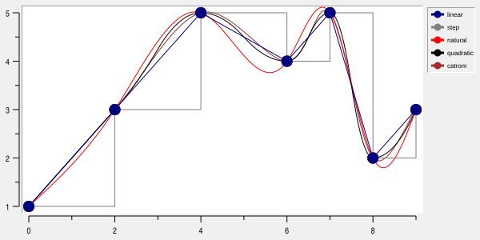
Trace direction
-trace determines whether connecting segments are drawn when X values change direction.
Value |
Description |
|---|---|
|
Connects points regardless of whether X increases or decreases. This is the default. |
|
Draws only portions whose X coordinates proceed in the increasing direction. |
|
Draws only portions whose X coordinates proceed in the decreasing direction. |
The option is useful for datasets that retrace their X coordinates and where only one sweep direction should be displayed.
Display decimation for large data sets
-decimate controls automatic screen-density reduction for large line and strip data sets.
With auto, reduction is considered at 8 source points per physical data-X pixel for native rendering,
or 4 for Cairo. Density uses the complete source count divided by the plot span, including with -invertxy.
Switching renderers remaps the data. Eligibility and point-selection rules are unchanged.
It is intended for dense waveforms where many source samples map to each physical display pixel. Without decimation, mapping and drawing millions of source points can dominate redraw, zoom, pan, and source-update time even though most of those points cannot be distinguished on screen.
Accepted values are:
Value |
Description |
|---|---|
|
Disables automatic display decimation. This is the default. |
|
Enables automatic screen-density decimation when the line and current display density are suitable. |
For example:
.g element configure signal -decimate auto
Decimation principle
Automatic decimation operates in the physical screen dimension corresponding to data X. Normally this is the
horizontal plotting dimension; with -invertxy it is the vertical plotting dimension.
Source samples that occupy the same physical data-X pixel are represented by at most four source points:
first
minimum ordinate
maximum ordinate
last
The retained representatives remain in source-data order. This preserves narrow positive and negative excursions that could be lost by averaging or by retaining only every Nth source sample.
Decimation never modifies the source vectors or lists.
It is a screen-display optimization only. PostScript output is always remapped at full source resolution and
is not reduced by -decimate.
Exact source-point searches using:
ELEMENT closest x y varName -interpolate no
retain source-data semantics even when the displayed trace is decimated. Searches with -interpolate yes
operate on the rendered trace geometry.
When automatic decimation is used
auto does not force every line or strip element through the decimation path. RBC first checks whether
decimation is useful and whether it can preserve the element’s drawing semantics.
The source density must currently be at least approximately eight source points per physical data-X plot pixel. Sparse lines continue through the ordinary mapping path because decimation would provide little or no benefit.
The following conditions determine how far the optimization can proceed:
Optimization level |
Conditions |
Effect |
|---|---|---|
Automatic trace decimation |
Ordinary |
The displayed trace may be reduced to pixel-density geometry. |
Pre-map decimation |
Above conditions, plus no normal symbols or value labels, no error/high/low data, and no all-points-active symbols or values |
RBC can avoid constructing complete per-source mapped point, symbol, and style arrays. |
Persistent cached decimation |
Pre-map conditions, plus globally monotonic X and finite data valid for the current logarithmic domains |
Axis-only remaps, ranged Y updates, and valid tail growth can reuse the persistent data-domain cache instead of rescanning the complete source vector. |
For the strongest optimization, a large waveform should normally be configured similarly to:
.g element create signal -xdata xVector -ydata yVector -symbol none -showvalues no -smooth linear -decimate auto
X may increase, decrease, or remain equal; it need not increase specifically. Axis -descending and graph
-invertxy do not prevent the persistent cached path.
Explicitly activated individual source points are compatible with the pre-map path because those points can be mapped independently. Activating all points with an active pen that draws symbols or value labels requires the complete point mapping and therefore disables that path.
Supplying error-bar data also prevents the pre-map optimization even if error-bar display is subsequently hidden, because the error data remain associated with individual source points.
Fallback behavior
-decimate auto is deliberately conservative. If a faster path cannot safely represent a particular line, RBC
falls back to a more general mapping path rather than changing the plotted topology.
For example:
non-finite values and logarithmically invalid values create normal trace discontinuities;
continuous monotonic runs may still be decimated independently even when a persistent cache cannot be used;
a path that reverses direction in X is not combined across repeated pixel columns;
symbols, value labels, or error data may require full source-point mapping even when the connecting trace can still be reduced;
unsupported combinations simply retain the ordinary full-resolution screen mapping.
Therefore -decimate auto may safely be left enabled for eligible large line and strip elements. It is not
necessary for an application to switch the option on and off as the graph is zoomed: RBC makes the density
decision again for the current plotting area.
Updates to vector data
Persistent decimation is particularly useful when -xdata and -ydata refer to RBC vectors.
A ranged modification of existing Y data can update only the affected cached summaries while retaining the X ordering information. This applies to ordinary vector-index writes and mapped Tcl-array writes, for example:
yVector index 100000 1.25
or:
set yArray(100000) 1.25
C extensions can provide the same information for in-place modifications with Rbc_VectorChangedRange.
Pure tail growth is also maintained incrementally. The vector append operation and a write using the special
++end index report the newly appended source range:
xVector append $newX
yVector append $newY
or:
xVector index ++end $newX
yVector index ++end $newY
When the new X values preserve the existing monotonic direction and the appended X/Y values remain finite and valid for the current logarithmic domains, RBC extends the persistent decimation cache rather than rebuilding its existing source prefix. Only the new samples and, when necessary, the previous partial 64-sample summary block need to be examined.
Vector growth may relocate the vector’s backing storage. An exact tail-growth notification allows the cache to survive such relocation because the already cached source prefix is known to be unchanged.
X modifications inside the existing cached prefix remain conservative: because X determines source ordering and pixel-bucket lookup, such a modification invalidates the persistent cache.
Shrinking a source vector, non-monotonic tail growth, non-finite appended data, arbitrary storage replacement, and unknown/full-vector modifications also fall back to complete cache invalidation or to the ordinary mapping path as appropriate.
X and Y vectors may be appended independently. While their lengths differ, the element continues to use the shorter length. When the second vector catches up, the newly exposed XY points can extend the same persistent cache if the tail-growth conditions remain satisfied.
Interaction with -reduce
-decimate and -reduce solve different problems and may be used together.
-decimate auto is a display-density optimization. It removes source samples that are redundant at the current
pixel resolution while retaining the first, minimum, maximum, and last sample associated with a pixel bucket.
-reduce is a geometric screen-space simplification controlled by a user-specified tolerance.
When both are active, automatic density decimation is performed first and -reduce is subsequently applied to
the resulting trace.
Unlike -decimate, an explicitly configured -reduce tolerance also applies when generating PostScript.
Point reduction
-reduce enables screen-space simplification of the mapped line.
A positive value specifies the reduction tolerance. A value less than or equal to zero disables reduction;
the default is 0.0.
.g element configure signal -reduce 1.0
Reduction is performed separately for every continuous data run, so it does not reconnect traces across missing values.
Reduction affects rendered geometry only; it does not modify the element’s source data.
For information about -reduce option interaction with displayed symbols, see Symbols.
Example of line mapped points reduction with two different window sizes:
vector create signal1x signal1y
set pi 3.14159265359
signal1x seq 0 {2*$pi} {2*$pi/100}
signal1y expr {sin(signal1x)}
$graph element create signal1 -x signal1x -y signal1y -symbol {}
$graph element create signal1reduced -x signal1x -y signal1y -reduce 4 -color green -symbol {} -linewidth 2
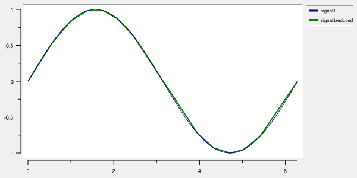
And in window with smaller width:
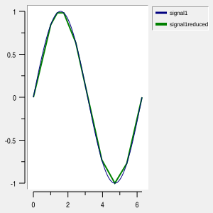
You can see that location of mapped points changed.
Symbols
Symbols may be drawn at element data points using -symbol.
The built-in symbol names are:
none
circle
square
diamond
plus
cross
splus
scross
triangle
arrow
The default is circle. An empty value is equivalent to none.
A Tk bitmap may also be used as a symbol. The value is a one- or two-element list:
-symbol bitmap
-symbol {bitmap mask}
where bitmap and optional mask are names understood by Tk’s bitmap machinery.
Symbol appearance is controlled by:
Option |
Description |
|---|---|
|
Sets the requested symbol size. The default is |
|
Sets the symbol fill color. |
|
Sets the symbol outline color. |
|
Sets the non-negative symbol outline width. The default is |
|
Controls whether symbol sizes change as the graph axis ranges change. The default is |
|
Reduces the density of displayed symbols. |
-maxsymbols is a display-density control rather than a modification of the source data. When positive, RBC
computes an interval and draws approximately the requested number of symbols across the visible element. The
same interval policy applies to SVG and PostScript output. Legend symbols and active symbols are not thinned.
By default, -symbolpoints all keeps symbols and value labels at the original eligible sample points,
independently of trace reduction. Set -symbolpoints reduced to keep only original samples that remain as
vertices of the reduced trace:
.g element configure signal -reduce 1.0 -symbolpoints reduced
With a non-positive -reduce, both modes keep all eligible samples. Generated spline samples and step corners
never acquire symbols or value labels. A source sample is retained only when both its index and mapped
coordinates match a retained trace vertex. This can leave few symbols on heavily simplified curves. The
selection also applies to symbols-only elements (-linewidth 0) and is recomputed when the axes change.
-maxsymbols further thins symbols, error bars and value labels together on screen and in SVG/PostScript; its
default 0 adds no thinning. Explicit active indices can still highlight omitted samples; activating all
points uses the selected set. Exact closest-point searches (-interpolate no) continue to search all source
samples. SVG and PostScript use the reduced selection too, with reduction evaluated for the export
geometry. The option is shared by line, stripchart, and polar elements.
Example of line mapped points reduction with additional symbols reduction by providing -symbolpoints reduced,
and both -symbolpoints reduced and -maxsymbols 3 at the same time:
vector create signal1x signal1y
set pi 3.14159265359
signal1x seq 0 {2*$pi} {2*$pi/100}
signal1y expr {sin(signal1x)}
.g element create normal -x signal1x -y signal1y -pixels 3 -fill {}
.g element create reduced -x signal1x -y signal1y -reduce 6 -color green -fill {} -pixels 6 -symbolpoints all
.g element create reducedSymbols -x signal1x -y signal1y -reduce 6 -color red -fill {} -pixels 12 -symbolpoints reduced
.g element create reducedSymbolsMaxSymbols -x signal1x -y signal1y -reduce 6 -color grey -fill {} -pixels 24 -symbolpoints reduced -maxsymbols 3
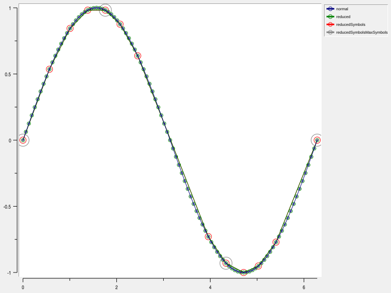
Reduction is not applied to element normal. It contains all data points displayed as symbols.
Element reduced has reduction applied, it affects drawing of the line, but does not affect displayed symbols,
so symbols are visually not on the reduced line.
Element reducedSymbols has option -symbolpoints reduced set, so symbols aligned with the reduced line.
Element reducedSymbolsMaxSymbols has both options -symbolpoints reduced and -maxsymbols 3 set, so number
of displayed symbols are additionaly reduced compared with reducedSymbols element.
Error bars of line elements
Error-bar data may be specified in either symmetric or asymmetric form.
Symmetric X errors use:
-xerror values
and produce limits:
x - error
x + error
Symmetric Y errors similarly use:
-yerror values
Asymmetric or absolute limits may instead be supplied using:
-xlow
-xhigh
-ylow
-yhigh
When -xerror contains values it takes precedence over -xlow and -xhigh. Likewise, -yerror takes
precedence over -ylow and -yhigh.
Error vectors may be Tcl lists or RBC vector names, in the same way as X and Y data.
The drawing style is controlled by:
Option |
Description |
|---|---|
|
Selects which error bars are displayed. The default is |
|
Sets the error-bar color. |
|
Sets the non-negative error-bar line width. The default is |
|
Sets the requested non-negative cap width. The default is |
Example of different error bars:
.g element create signal1 -data {0 1 2 3 4 5} -yerror {0.2 0.1 0.3} -errorbarwidth 2 -errorbarcap 10 -pixels 2
.g element create signal2 -data {0 0.5 2 2.5 4 4.5} -xerror {0.2 0.1 0.3} -errorbarwidth 2 -errorbarcap 10 -color green -pixels 2
.g element create signal3 -data {0 5 2 3.5 4 1} -ylow {4.8 3.2 0.3} -yhigh {5.2 4 1.3} -xlow {-0.1 1.7 3.5} -xhigh {0.2 2.2 4.05} -errorbarwidth 2 -errorbarcap 10 -color red -pixels 2
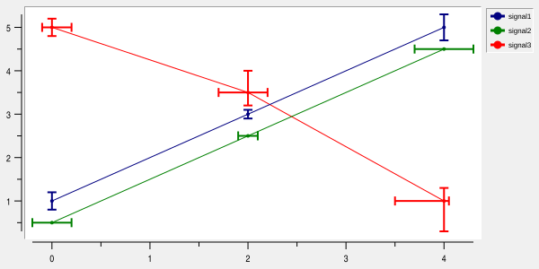
Error bars follow the original sample selection made by -symbolpoints. With reduced selection and a
positive -reduce tolerance, only retained samples have error bars. A positive -maxsymbols further thins
symbols and error bars together, using the same interval across pen styles. Each selected error bar
keeps its shaft and caps.
This also applies with -symbol none and to SVG and PostScript output. Value labels use the same thinned
samples. Source data, axis limits and exact closest-point searches are unchanged. The default -symbolpoints
all -maxsymbols 0 preserves all eligible error bars.
Value labels of line elements
Data values may be displayed next to symbols with -showvalues.
The value may select X values, Y values, both coordinates, or no values. The default is no.
When both coordinates are requested, the formatted X and Y values are displayed together.
Value-label appearance is controlled by:
Option |
Description |
|---|---|
|
Specifies the Tk anchor of the label relative to the data point. The default is |
|
Sets the label color. The default is black. |
|
Sets the label font. |
|
Formats value labels with a Tcl command prefix. The default is empty. |
|
Moves the label anchor by signed integer pixels. Default: |
|
Sets the printf-style floating-point format. The default is |
|
Rotates the label by the specified angle in degrees. The default is |
|
Specifies an optional text shadow. An empty value disables the shadow. |
-valueformat is validated before it is accepted. It may contain at most one floating-point conversion,
using a, A, e, E, f, F, g, or G. Dynamic width or precision using * is not permitted.
Normal value labels follow -symbolpoints and -maxsymbols, even with -symbol none. Hidden labels do not
invoke -valuecommand. Thinning uses the sample position across all pen styles, including styles with
-showvalues none. Active labels bypass -maxsymbols, matching active symbols: explicitly activated indices
can label omitted samples, while activating all points labels the set selected by -symbolpoints.
X and Y error bands
Cartesian line and strip elements can fill the space between their lower and upper error bounds. Select one
direction with -errorband x or -errorband y; the default none disables the band. X bands use -xerror
as symmetric magnitudes around X, or both -xlow and -xhigh as absolute endpoints. Y bands use the
corresponding Y options. Nonempty symmetric errors take precedence over absolute bounds on the selected
axis. Lists and real vectors are supported. Errors on the other axis do not affect the band. Simultaneous X and
Y bands (both) are not supported.
.g element create signal -data {0 2 1 3 2 2.5} -yerror {0.2 0.4 0.3} -errorband y -errorbandopacity 0.25 -errorbandforeground steelblue
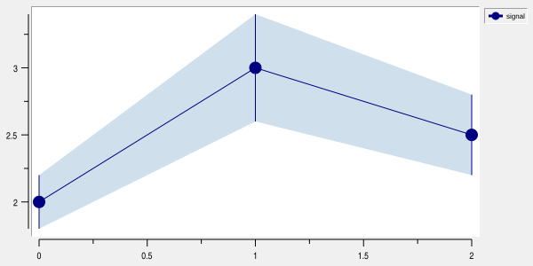
Asymmetric absolute endpoints instead of symmetric magnitudes:
.g element configure signal -yerror {} -ylow {1.7 2.5 2.1} -yhigh {2.4 3.2 3.0}
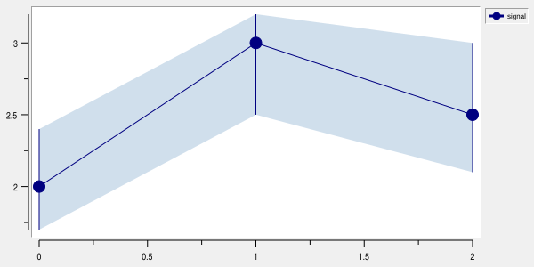
.g element create horizontal -data {2 0 3 1 2.5 2} -xerror {0.2 0.4 0.3} -errorband x -errorbandopacity 0.25 -errorbandforeground steelblue
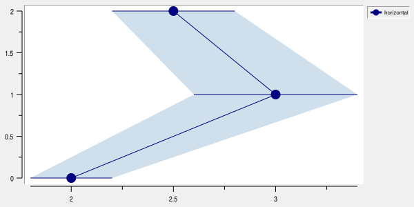
Asymmetric absolute endpoints instead of symmetric magnitudes:
.g element configure horizontal -xerror {} -xlow {1.7 2.5 2.1} -xhigh {2.4 3.2 3.0}
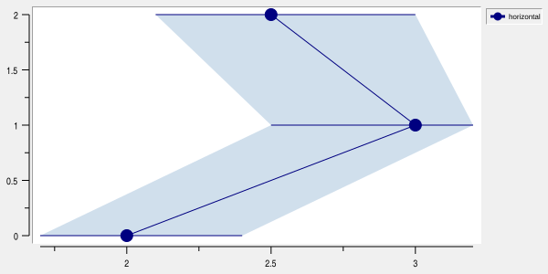
Band styling is independent of ordinary area filling and error-bar strokes. It supports solid, Tk bitmap
stipples, and image tiles through the -errorbandpattern, -errorbandforeground, -errorbandbackground, and
-errorbandtile options. The pattern defaults to solid, foreground to black, background to white, and tile
to empty. An empty pattern disables pattern filling. A nonempty tile takes precedence over the pattern,
including when the tile image is empty or deleted. Tile changes trigger redrawing. Clear -errorbandtile to
restore pattern filling.
.g element configure signal -errorbandpattern gray25 -errorbandbackground {}
.g element configure signal -errorbandtile $image
-errorbandopacity is a finite number from 0 to 1, default 1. It follows ordinary area-fill rules: Cairo and
SVG apply it to solid fills; stipples and tiles retain their existing transparency rules. Native rendering and
PostScript accept but ignore this opacity option. Use Cairo or SVG for partially transparent solid
bands. PostScript retains the ordinary area-tile background-color fallback.
Bands support -smooth linear and -smooth step; enabling a band with spline smoothing is rejected. Linear
bands connect successive lower endpoints and successive upper endpoints in source order. Step bands use the
trace’s existing X-first convention for each boundary: move to the next boundary X while holding the previous
Y, then move to the next Y. For X bands this places the vertical part between successive sample Y values at the
next sample’s X bounds; it is not a Y-first staircase.
Inverted axes change screen orientation without changing this data-coordinate convention. Bounds are normalized
to lower/upper order. Each run needs at least two samples with finite X, Y and both bounds; invalid samples
split the band. Nonpositive coordinates or bounds on a logarithmic axis split runs rather than being reflected
or bridged. Missing bounds and shortened lists terminate the available run. Line-element -trace direction
restrictions also split bands. Input order is preserved.
The band uses original source samples, independently of -reduce, -symbolpoints, -maxsymbols, and
screen-density -decimate. It is drawn over the element’s ordinary area fill and below its trace, symbols,
error bars, and value labels. -showerrorbars none hides error-bar strokes without hiding the band. Existing
error-data axis extents and closest-point results are unchanged; the band itself does not add a hit-test target
or legend swatch.
Bands cover X or Y errors on Cartesian line and strip elements only. Polar/Smith bands, spline bands, and
separate boundary outlines are not supported. The band closes between its two bounds, so ordinary -areaclose
does not affect it.
Value-label position
-valueoffset {dx dy} moves the label anchor by signed integer pixels: positive X moves right, positive Y
moves down. The default is {0 0}. Directions stay the same with -invertxy and -valuerotate;
-valueanchor still controls text alignment. The offset is measured from the existing label position, not from
the symbol edge.
This option applies to line, strip, Polar and bar elements and their named, active and weighted-style pens. It
works with -valueformat and -valuecommand, in both renderers and PostScript output. PostScript uses the
offset before page scaling. Source coordinates passed to callbacks do not change.
.g element configure signal -showvalues y -valueanchor s -valueoffset {0 -8}
.g pen configure selected -valueoffset {8 -8}
Custom value-label text
-valuecommand supplies a Tcl command prefix for value labels. It is available on line, strip, Polar and bar
elements and on their named pens, including active and weighted-style pens. The option database name and class
are valueCommand and ValueCommand. The default is empty.
proc ElementLabel {names graph element index x y} {
return [lindex $names $index]
}
.g element configure samples -showvalues y -valuecommand [list ::ElementLabel {Hydrogen Helium Lithium}]
The callback runs in the global namespace with five arguments appended to its prefix:
graph: graph widget pathname.element: element name, including when several elements share a named pen.index: original zero-based source index, not an index into mapped or clipped geometry.x,y: numeric source-point coordinates, before axis transformations and independent of-invertxy. Polar complex data supplies Cartesian components; Smith data supplies Gamma components.
-showvalues none disables labels and callback invocation. For x, y, or both, the callback receives
both coordinates and returns the complete label. Its result takes precedence over -valueformat.
An empty result hides that label. Multiline text is supported, and callback output is not subject to the
fixed printf-format buffer limit. Font, color, anchor, rotation, and shadow options still apply.
Commands are called when labels are drawn or exported to PostScript. Buffered redraws may reuse existing output, so applications must not rely on a fixed invocation count. Formatting callbacks must not modify the graph, elements, pens, or source vectors, destroy widgets, or enter a nested event loop.
Malformed command prefixes are rejected during configuration. Callback errors are reported through Tcl’s
background error handler and the affected label uses -valueformat, matching axis formatter behaviour.
Clearing -valuecommand restores normal formatting. -valueformat remains validated as the fallback.
Pens, weights, and styles
-weights associates one numeric weight with each data point. The value may be a Tcl list or the name of an
RBC vector.
-styles maps ranges of those weights to named line pens.
Each entry in the -styles list has one of two forms:
penName
penName min max
For example:
.g pen create low -type line -color blue
.g pen create high -type line -color red
.g element create signal -data {0 1 2 3 4 5 6 7}
.g element configure signal -weights {0.2 0.4 1.2 1.8} -styles {{low 0 1} {high 1 2}}
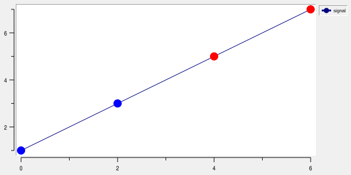
A style without explicit limits receives the legacy default range based on its position in the style list: the first style covers 0 through 1, the second 1 through 2, and so on.
Points whose weights do not match a configured style use the element’s normal pen.
Later style entries take precedence when weight ranges overlap.
The selected pen controls the drawing attributes associated with the mapped points, including symbols, traces, and error bars.
Area under the line
Line elements, unlike strip elements, may fill the area beneath the rendered trace.
Area filling is enabled by either -areapattern or -areatile.
-areapattern accepts:
an empty value to disable the pattern;
solidfor a solid fill;the name of a Tk bitmap to use as a stipple.
The stipple colors are controlled by -areaforeground and -areabackground.
For example:
.g element create signal -data {0 1 2 3 4 5 6 5}
.g element configure signal -areapattern solid -areaforeground lightblue
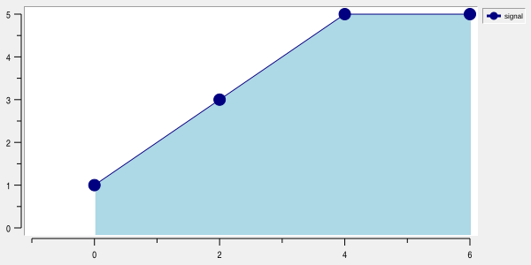
-areaclose selects how the fill polygon closes an open trace:
baseline(default): extends both endpoints to the plot bottom, retaining historical behaviour.chord: connects the last point directly to the first.origin: connects the last point to Cartesian (0,0), then to the first, using the element’s mapped axes.
Closure affects only the fill, not the visible trace. It applies to solid fills, stipples, tiles and
PostScript. For an open polar arc, chord fills a segment and origin fills a sector. For example:
.g axis configure y -min 0
.g axis configure x -min -1
.g element create signal -data {0 1 2 3 4 5 6 5}
.g element configure signal -areaclose chord -areapattern solid -areaforeground lightblue
-areaclose origin:
.g element configure signal -areaclose origin -areapattern solid -areaforeground lightblue
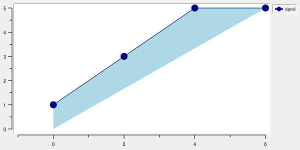
-areaclose chord:
.g element configure signal -areaclose chord -areapattern solid -areaforeground lightblue
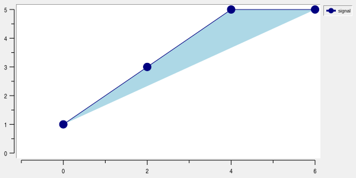
In case of closed element (last point match the first), the -areaclose parameter doesn’t matter:
.g element create signal -data {0 1 2 3 4 5 6 5 0 1}
.g element configure signal -areapattern solid -areaforeground lightblue
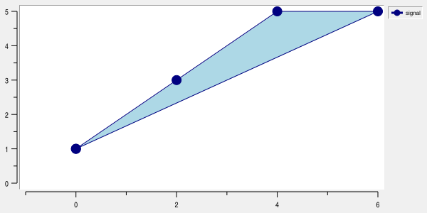
Chord and origin fills align with the mapped trace without the historical baseline pixel offset. Baseline and origin closure need at least two mapped points; chord closure needs at least three. Origin filling is omitted when either mapped axis is logarithmic, since zero has no logarithmic coordinate. Existing restrictions on discontinuous traces remain. Self-intersecting curves retain the renderer’s fill rule; origin closure does not mean filling between successive turns of a spiral. Existing PostScript limitations for image tiles are unchanged.
-areaopacity controls solid area fills (-areapattern solid) with -renderer cairo and in SVG output. It
accepts a finite number from 0.0 (invisible) to 1.0 (opaque, the default). Intermediate values blend the
fill with the content already drawn beneath it. It does not change the trace, symbols, stipples, or image
tiles; photo tiles use their own pixel alpha. An invisible fill remains configured and does not affect element
data or closest searches.
.g configure -renderer cairo
.g element create signal1 -data {2 2 4 4}
.g element create signal -data {0 1 2 3 4 5 6 5}
.g element configure signal -areapattern solid -areaforeground blue -areaopacity 0.3
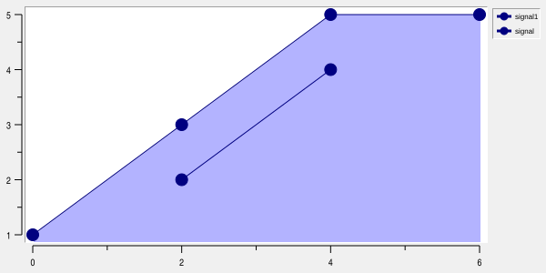
Native renderer limitation: -renderer native accepts but ignores -areaopacity; solid fills remain
opaque, including at 0.0. Native image tiles use a binary transparency mask and do not provide full alpha
blending. PostScript output also ignores -areaopacity and retains opaque solid fills. Switching to Cairo
restores the configured opacity.
-areatile specifies an RBC tile/image used to fill the area. An empty value disables the tile.
With -renderer cairo, solid, stippled, and photo-tiled areas use the graph’s -antialias setting. Stipple
pixels remain sharp and aligned to the widget origin; antialiasing affects the polygon edge. An empty
-areabackground leaves gaps transparent. Image tiles take precedence over patterns. Photo tiles align to the
toplevel window origin and preserve their alpha, including partial transparency. Image edits and resizing
refresh the displayed fill; deleting a photo removes it without enabling the underlying pattern. Recreating the
image with the same name restores the tile.
Non-photo image tiles retain native rendering. Solid/stippled areas with an empty -areaforeground use Cairo
with the native GC color. Native photo tiles retain their existing transparency-mask behavior.
The fill polygon follows the mapped line and uses the closure selected by -areaclose.
Area filling uses the geometry after smoothing and point reduction.
The current implementation stores one fill polygon per line element. Consequently, if the mapped line contains a discontinuity, area filling is suppressed rather than incorrectly filling across separate data runs.
Line element options
The complete line-element option set is:
Option |
Database name |
Database class |
Description |
|---|---|---|---|
|
|
|
Specifies the named line pen used when the element is active. An empty value disables the named active pen. The default is |
|
|
|
Sets the background color used by an area stipple. The default is white. |
|
|
|
Sets the foreground color used by an area fill or stipple. The default is black. |
|
|
|
Fill closure: |
|
|
|
Solid fill opacity from |
|
|
|
Enables area filling with |
|
|
|
Enables area filling with the named RBC tile/image. An empty value disables the tile. |
|
|
|
Specifies additional graph binding tags for the element. The default is |
|
|
|
Sets the built-in normal pen’s trace color. The default is navy blue. |
|
|
|
Sets the built-in normal pen’s trace dash pattern. An empty value selects a solid line. Each numeric list item accepts a Tcl integer expression. |
|
|
|
Supplies an even-length list of alternating X and Y values. Each literal list item accepts a Tcl numeric expression. |
|
|
|
Selects automatic screen-density trace decimation. Accepted values are |
|
|
|
Selects none (default), x or y; fills between the selected error bounds. |
|
|
|
Solid (default), Tk bitmap stipple, or empty to disable the pattern. |
|
|
|
Band solid/stipple foreground; default black. |
|
|
|
Band stipple background; default white. Empty leaves gaps transparent. |
|
|
|
Image tile, default empty; takes precedence over the pattern. |
|
|
|
Solid opacity 0 to 1 (default 1), Cairo/SVG only. Native/PostScript ignore it. |
|
|
|
Sets the requested error-bar cap width. A positive value selects an explicit size; |
|
|
|
Sets the error-bar color. |
|
|
|
Sets the error-bar line width. The default is |
|
|
|
Sets the symbol fill color. |
|
|
|
Controls whether the element is displayed. The default is |
|
|
|
Suppresses plotting of the element while keeping it in the display list and legend. A plot-hidden element does not contribute to automatic axis limits and is ignored by closest searches and element hit testing. The default is |
|
|
|
Sets the element label used by the legend. The initial label is the element name. |
|
|
|
Sets the relief used for the element’s legend label. The default is |
|
|
|
Sets the built-in normal pen’s trace width. The default is |
|
|
|
Specifies the X axis used to map the element’s X coordinates. The axis must exist and must be an X axis. The default is |
|
|
|
Assigns a line or strip element to a named ::rbc::TRACKGRAPH track. The selected |
|
|
|
Specifies the Y axis used to map the element’s Y coordinates. The axis must exist and must be a Y axis. The default is |
|
|
|
Selects |
|
|
|
Requests a reduced symbol display density when the element contains many points. |
|
|
|
Sets the color used for the gaps of a dashed trace. An empty value leaves the gaps transparent; |
|
|
|
Sets the symbol outline color. |
|
|
|
Sets the non-negative width of symbol outlines. The default is |
|
|
|
Associates one real parameter value with each data point. Accepts a numeric list or real RBC vector. An empty value disables parameter mapping. |
|
|
|
Specifies a named line pen containing the element’s normal drawing attributes. An empty value uses the element’s built-in pen. |
|
|
|
Sets the requested symbol size. The default is |
|
|
|
Sets the screen-space tolerance used to reduce the number of points in the displayed trace. A non-positive value disables reduction. The default is |
|
|
|
Controls whether symbol sizes are automatically scaled as the axis ranges change. The default is |
|
|
|
Selects which error bars are displayed: X, Y, both, or neither. The default is |
|
|
|
Selects which coordinate values are displayed next to data points. The default is |
|
|
|
Selects line smoothing. Accepted modes are |
|
|
|
Sets the element state. The default is |
|
|
|
Specifies pens selected according to |
|
|
|
Sets the symbol drawn at data points. The default is |
|
|
|
Controls which line segments are drawn according to the direction of successive X coordinates. Accepted values are |
|
|
|
Sets the anchor used to position value labels relative to their data points. The default is |
|
|
|
Sets the color used to draw value labels. |
|
|
|
Sets the font used to draw value labels. |
|
|
|
Formats value labels with a Tcl command prefix. The default is empty. |
|
|
|
Moves the label anchor by signed integer pixels. Default: |
|
|
|
Sets the printf-style format used for value labels. The default is |
|
|
|
Sets the rotation angle of value labels in degrees. The default is |
|
|
|
Specifies a shadow for value labels. An empty value disables the shadow. |
|
|
|
Supplies per-point numeric weights used to select pens through |
|
|
|
Supplies the element’s X coordinates as a list or RBC vector. Each literal list item accepts a Tcl numeric expression. |
|
— |
— |
Synonym for |
|
|
|
Supplies symmetric X error magnitudes as a list or RBC vector. Each literal list item accepts a Tcl numeric expression. |
|
|
|
Supplies the upper X error endpoints as a list or RBC vector. Each literal list item accepts a Tcl numeric expression. |
|
|
|
Supplies the lower X error endpoints as a list or RBC vector. Each literal list item accepts a Tcl numeric expression. |
|
|
|
Supplies the element’s Y coordinates as a list or RBC vector. Each literal list item accepts a Tcl numeric expression. |
|
— |
— |
Synonym for |
|
|
|
Supplies symmetric Y error magnitudes as a list or RBC vector. Each literal list item accepts a Tcl numeric expression. |
|
|
|
Supplies the upper Y error endpoints as a list or RBC vector. Each literal list item accepts a Tcl numeric expression. |
|
|
|
Supplies the lower Y error endpoints as a list or RBC vector. Each literal list item accepts a Tcl numeric expression. |
Copyright (c) George Yashin